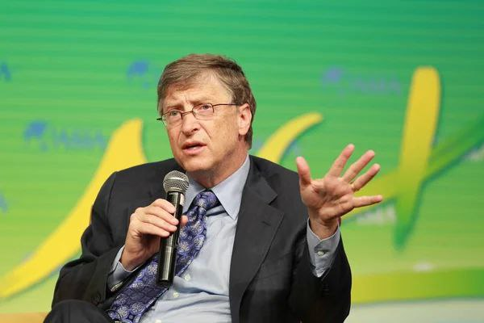
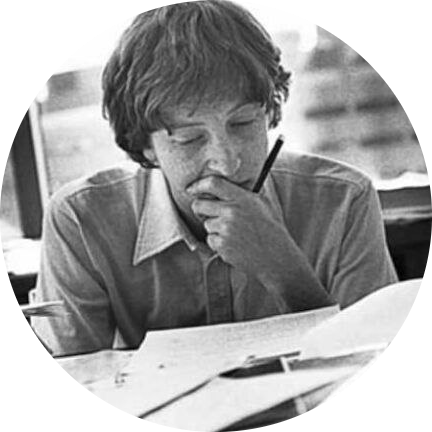
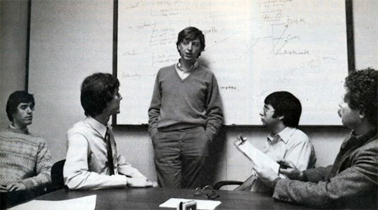

Brief about Bill Gates
William Henry Gates III (born October 28, 1955) is an American
business magnate, investor, and philanthropist. He is best known for
co-founding software giant Microsoft, along with his late childhood
friend Paul Allen.During his career at Microsoft, Gates held the
positions of chairman, chief executive officer (CEO), president and
chief software architect, while also being its largest individual
shareholder until May 2014.He was a major entrepreneur of the
microcomputer revolution of the 1970s and 1980s.

Bill in 2016
| Born |
William Henry Gates III October 28, 1955 (age 67) Seattle,
Washington, U.S.
|
| Education |
Harvard University(dropped out) |
| Occupation |
Businessman,programmer |
| Years active |
1972–presen |
| Known for |
Co-founder of Microsoft and Bill & Melinda Gates Foundation |
| Awards |
Knight Commander of the Order of the British Empire (2005) Padma
Bhushan (2015)
|
Early Life

Bill Gates was born in Seattle, Washington on October 28, 1955.[3] He
is the son of William H. Gates Sr.[b] (1925–2020) and Mary Maxwell
Gates (1929–1994).[22] His ancestry includes English, German, and
Irish/Scots-Irish.[23] His father was a prominent lawyer, and his
mother served on the board of directors for First Interstate
BancSystem and the United Way of America. Gates's maternal grandfather
was J. W. Maxwell, a national bank president. Gates has an older
sister Kristi (Kristianne) and a younger sister Libby. He is the
fourth of his name in his family but is known as William Gates III or
"Trey" (i.e., three) because his father had the "II" suffix.[24][25]
The family lived in the Sand Point area of Seattle in a home that was
damaged by a rare tornado when Gates was seven years old.[26] Early in
his life, Gates observed that his parents wanted him to pursue a law
career.[27] When he was young, his family regularly attended a church
of the Congregational Christian Churches, a Protestant Reformed
denomination.[28][29][30] Gates was small for his age and was bullied
as a child.[25] The family encouraged competition; one visitor
reported that "it didn't matter whether it was hearts or pickleball or
swimming to the dock; there was always a reward for winning and there
was always a penalty for losing".[31] Gates (right) with Paul Allen
seated at Teletype Model 33 ASR terminals in Lakeside School, 1970 At
13, he enrolled in the private Lakeside prep.
Microsoft
#Basic

Gates read the January 1975 issue of Popular Electronics which
demonstrated the Altair 8800, and he contacted Micro Instrumentation
and Telemetry Systems (MITS) to inform them that he and others were
working on a BASIC interpreter for the platform.[54] In reality, Gates
and Allen did not have an Altair and had not written code for it; they
merely wanted to gauge MITS's interest. MITS president Ed Roberts
agreed to meet them for a demonstration, and over the course of a few
weeks they developed an Altair emulator that ran on a minicomputer,
and then the BASIC interpreter. The demonstration was held at MITS's
offices in Albuquerque, New Mexico; it was a success and resulted in a
deal with MITS to distribute the interpreter as Altair BASIC. MITS
hired Allen,[55] and Gates took a leave of absence from Harvard to
work with him at MITS in November 1975. Allen named their partnership
"Micro-Soft", a combination of "microcomputer" and "software", and
their first office was in Albuquerque. The first employee Gates and
Allen hired was their high school collaborator Ric Weiland.[55] They
dropped the hyphen within a year and officially registered the trade
name "Microsoft" with the Secretary of the State of New Mexico on
November 26, 1976.[55] Gates never returned to Harvard to complete his
studies.
#IBM partnership

IBM, the leading supplier of computer equipment to commercial
enterprises at the time, approached Microsoft in July 1980 concerning
software for its upcoming personal computer, the IBM PC,[60] after
Bill Gates's mother, Mary Maxwell Gates, mentioned Microsoft to John
Opel, IBM's CEO.[61] IBM first proposed that Microsoft write the BASIC
interpreter. IBM's representatives also mentioned that they needed an
operating system, and Gates referred them to Digital Research (DRI),
makers of the widely used CP/M operating system.[62] IBM's discussions
with Digital Research went poorly, however, and they did not reach a
licensing agreement. IBM representative Jack Sams mentioned the
licensing difficulties during a subsequent meeting with Gates and
asked if Microsoft could provide an operating system. A few weeks
later, Gates and Allen proposed using 86-DOS, an operating system
similar to CP/M, that Tim Paterson of Seattle Computer Products (SCP)
had made for hardware similar to the PC.[63] Microsoft made a deal
with SCP to be the exclusive licensing agent of 86-DOS, and later the
full owner. Microsoft employed Paterson to adapt the operating system
for the PC[64] and delivered it to IBM as PC DOS for a one-time fee of
$50,000
#Windows

Microsoft and Gates launched their first retail version of Microsoft
Windows on November 20, 1985, in an attempt to fend off competition
from Apple's Macintosh GUI, which had captivated consumers with its
simplicity and ease of use.[69] In August of the following year, the
company struck a deal with IBM to develop a separate operating system
called OS/2. Although the two companies successfully developed the
first version of the new system, the partnership deteriorated due to
mounting creative differences.[70] The operating system grew out of
DOS in an organic fashion over a decade until Windows 95, which hid
the DOS prompt by default. Windows XP, released one year after Gates
stepped down as Microsoft CEO, was the first to not be based on
DOS.[71] Windows 8.1 was the last version of the OS released before
Gates left the chair of the firm to John W. Thompson on February 5,
2014
find me LOL
CONTACT US